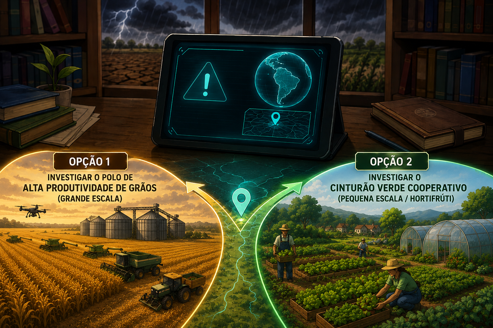
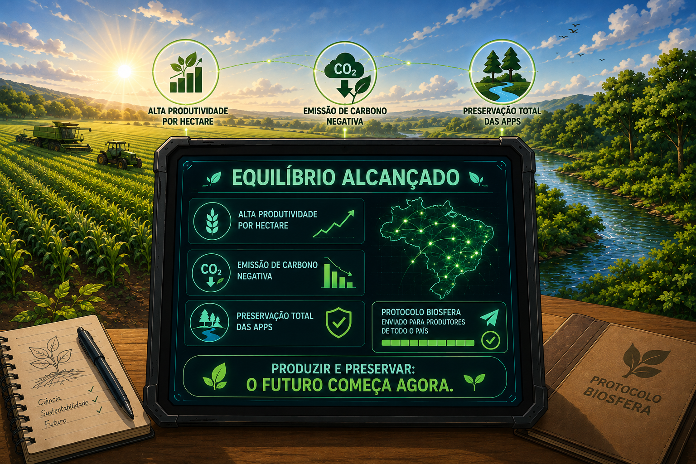

🌾 O Protocolo Biosfera 🌾

O ano é 2026. Mudanças climáticas extremas ameaçam a segurança alimentar do país. Na biblioteca da sua escola, você encontra um tablet criptografado deixado por um cientista desconhecido. A tela exibe um alerta: "O equilíbrio entre a produção em larga escala e a preservação ambiental foi decifrado. Deixo aqui as coordenadas do 'Protocolo Biosfera'. Siga as pistas antes que o solo se esgote." O primeiro ponto do mapa se divide em duas realidades agrícolas do país. Para onde você vai?
Você desembarca em uma plantação de soja que se perde no horizonte. O calor é sufocante. O cientista deixou um enigma no sistema: "Para alimentar uma população crescente, o Agro precisa ser forte, mas o segredo da força não está no que jogamos na terra, e sim no que deixamos nela. Tempestades severas estão previstas para amanhã. Proteja a estrutura física e microbiana deste solo contra a erosão imediatamente." Qual técnica de manejo você ativa no sistema da fazenda?
Você chega a uma cooperativa de agricultura familiar que abastece hospitais e escolas da região. O ar aqui é mais fresco, mas as estufas de tomates estão sob ataque massivo da lagarta Helicoverpa armigera. Uma mensagem gravada do cientista avisa: "Se usarmos veneno químico pesado aqui, mataremos as pragas, mas os resíduos contaminarão a água da comunidade e eliminarão as abelhas, que polinizam 75% das culturas agrícolas humanas. Precisamos repelir o ataque mantendo o equilíbrio biológico." Qual estratégia você escolhe?
O simulador da fazenda mostra o resultado em tempo real: a palhada da colheita anterior cria uma "colcha de proteção" sobre o solo. Quando a tempestade cai, a água não arrasta a terra (evitando a erosão), mantém a umidade subterrânea e alimenta fungos benéficos que fixam nitrogênio naturalmente, reduzindo a necessidade de fertilizantes químicos sintéticos. Uma nova coordenada pisca na tela: o laboratório de Recursos Hídricos.
A aração triturou a estrutura do solo e o deixou completamente exposto. Quando a tempestade chega, a água arrasta a camada mais fértil da terra (rica em matéria orgânica), causando voçorocas e assoreando o rio vizinho. O solo compacta, as plantas sufocam sem oxigênio nas raízes e a produtividade desaba. O sistema trava. Você falhou na missão de sustentabilidade e precisa corrigir o manejo do solo.
Dispositivos liberam milhares de microvespas. Elas procuram os ovos das lagartas e colocam seus próprios ovos dentro deles, interrompendo o ciclo da praga sem usar uma única gota de veneno. O Manejo Integrado de Pragas (MIP) funciona, a biodiversidade de polinizadores é salva e o alimento colhido é 100% seguro. Como recompensa, o sistema libera o acesso para a tecnologia mais avançada do cientista: a fazenda integrada ILPF.
O inseticida elimina as lagartas, mas também mata instantaneamente as joaninhas e abelhas da região. Sem abelhas, as flores dos tomateiros não são polinizadas, impedindo o nascimento de novos frutos. Para piorar, as poucas lagartas sobreviventes desenvolvem resistência química e retornam duas vezes mais fortes, gerando um colapso financeiro e ambiental na cooperativa.
As duas pistas se unem em uma paisagem impressionante: a Estação ILPF (Integração Lavoura-Pecuária-Floresta). Em uma mesma área, você vê fileiras de árvores nativas, gado pastando na sombra e plantações crescendo. O tablet do cientista emite um bipe de energia baixa: "Você chegou ao coração do agro sustentável. As árvores retêm o carbono da atmosfera, mitigando o efeito estufa, e o gado fertiliza a terra. Mas o clima está instável e uma seca severa se aproxima. Como você gerenciará a água para salvar a safra?"
Os sensores medem a evapotranspiração da planta e a umidade exata do solo, liberando gotas d'água direto na raiz apenas quando necessário. Essa eficiência economiza 45% de água dos mananciais e gasta menos energia elétrica. As árvores da ILPF ajudam a bombear água profunda para a superfície através de suas raízes, criando um microclima protegido. O tablet decodifica o arquivo final do projeto!
Os canhões lançam jatos massivos de água nas horas mais quentes do dia. Resultado: mais da metade da água evapora antes de tocar o chão. O excesso de umidade na superfície cria fungos nas folhas e "lava" os nutrientes para longe das raízes (lixiviação). A água do reservatório local se esgota rapidamente, deixando a fazenda vulnerável à seca e sem recursos para a próxima estação.

O tablet exibe os dados consolidados: alta produtividade por hectare, emissão de carbono negativa (graças às árvores e ao plantio direto) e preservação total das APPs (Áreas de Preservação Permanente) ao redor dos rios. Você provou que o Agro Forte não destrói a natureza, ele se alia a ela através da ciência. O protocolo é enviado para produtores de todo o país. Você venceu o jogo e salvou o futuro sustentável!
Ao instalar os sensores de precisão e o gotejamento, você interrompe o desperdício de água. O solo recupera o equilíbrio hidrodinâmico e as plantas voltam a respirar, abrindo caminho para a ativação do banco de dados final da fazenda modelo.